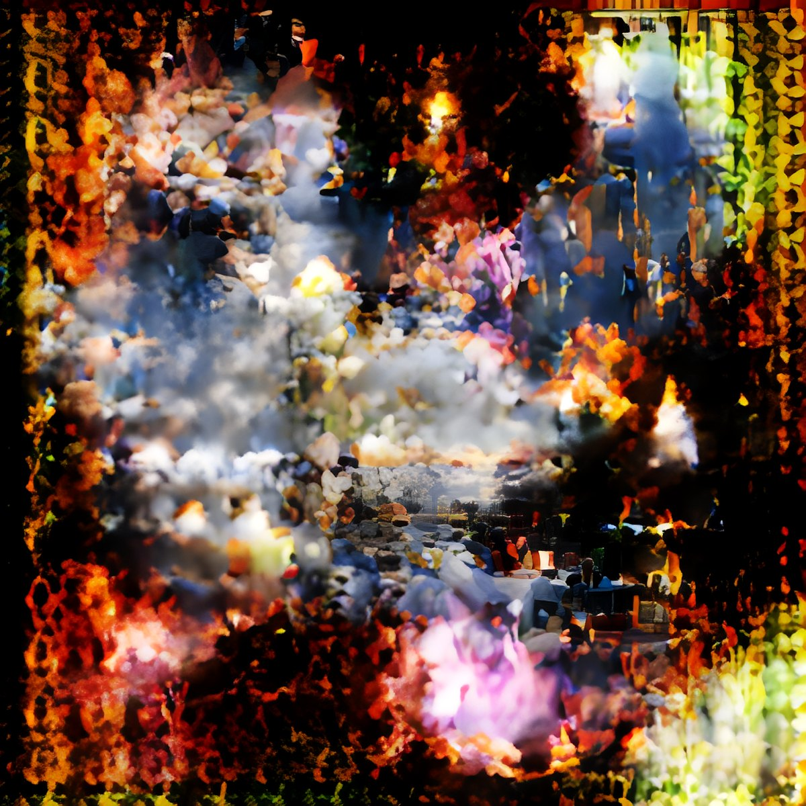
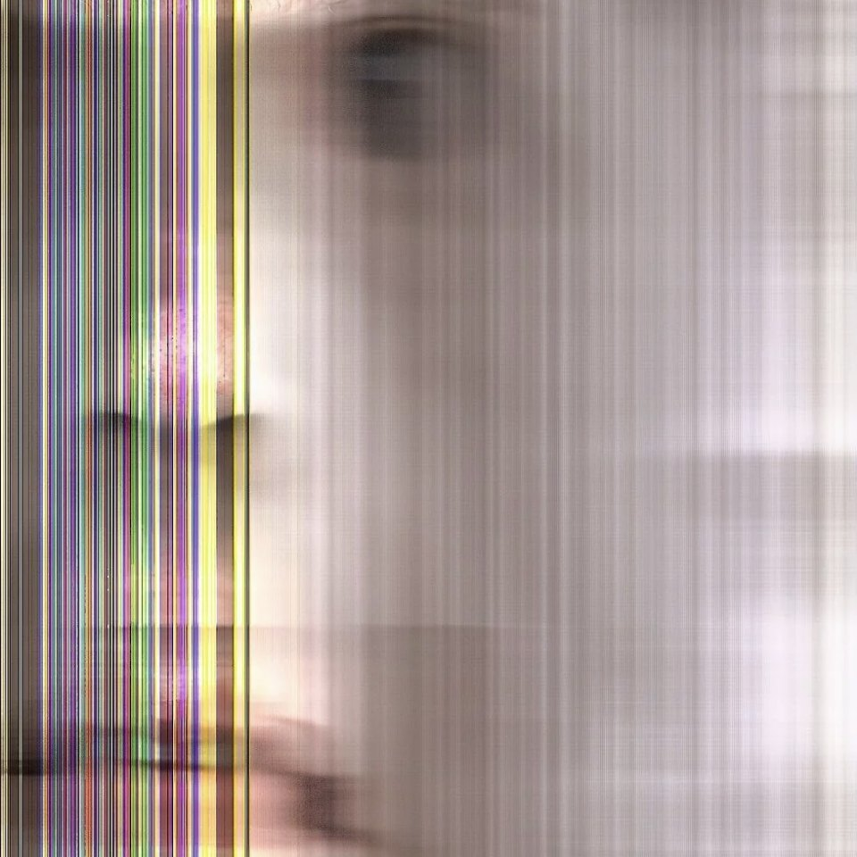
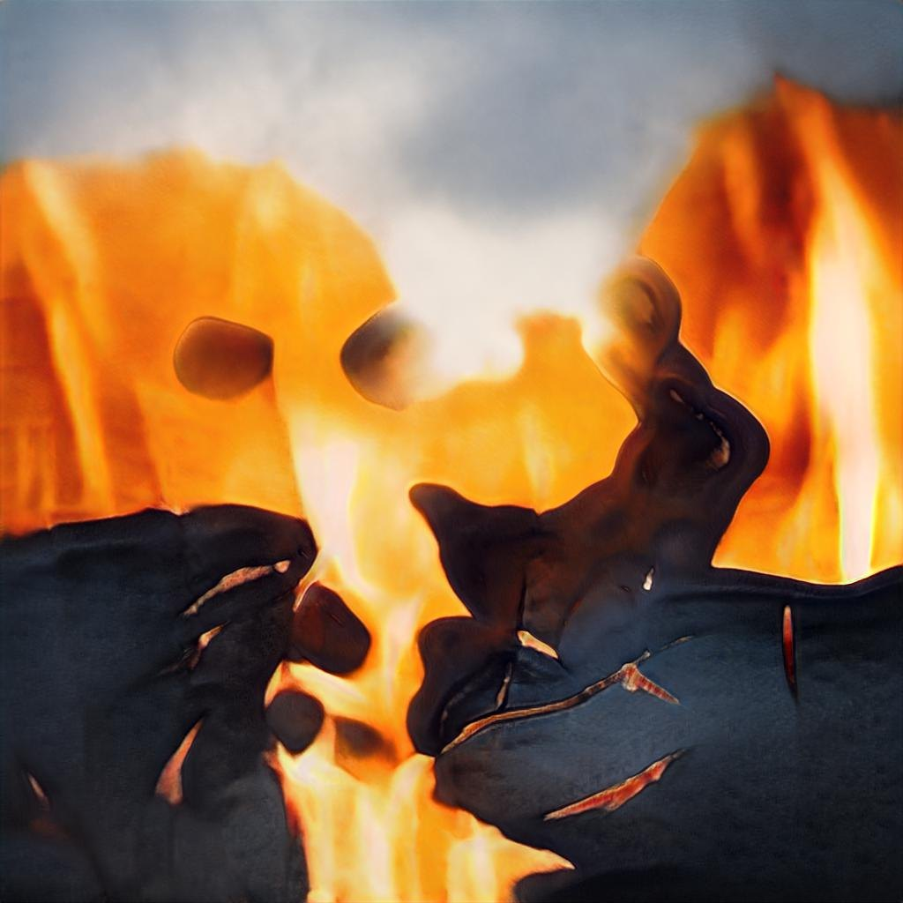
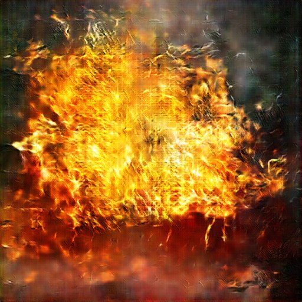
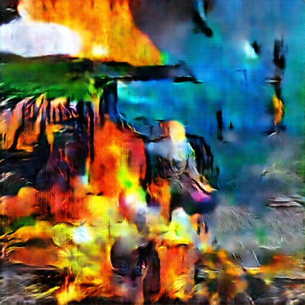
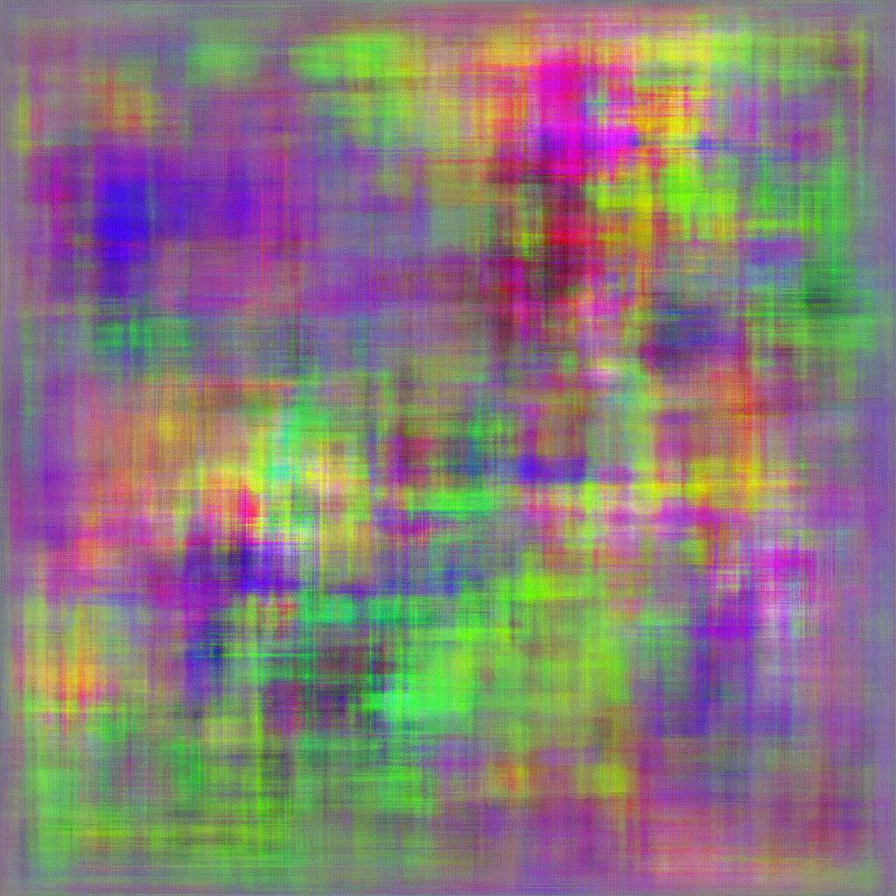
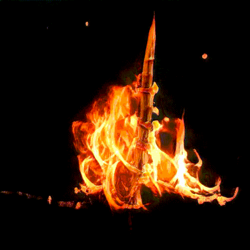
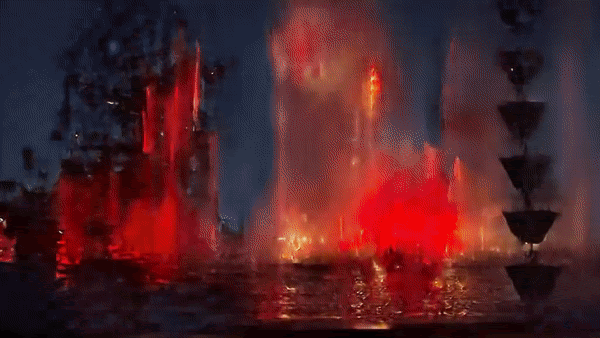
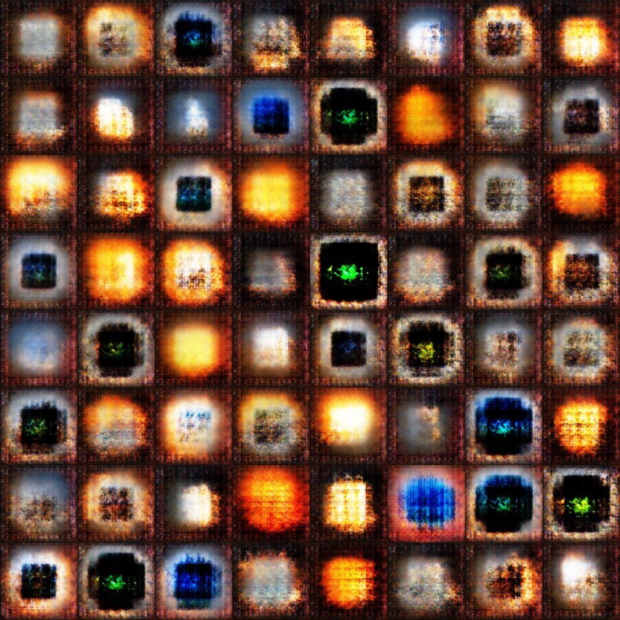
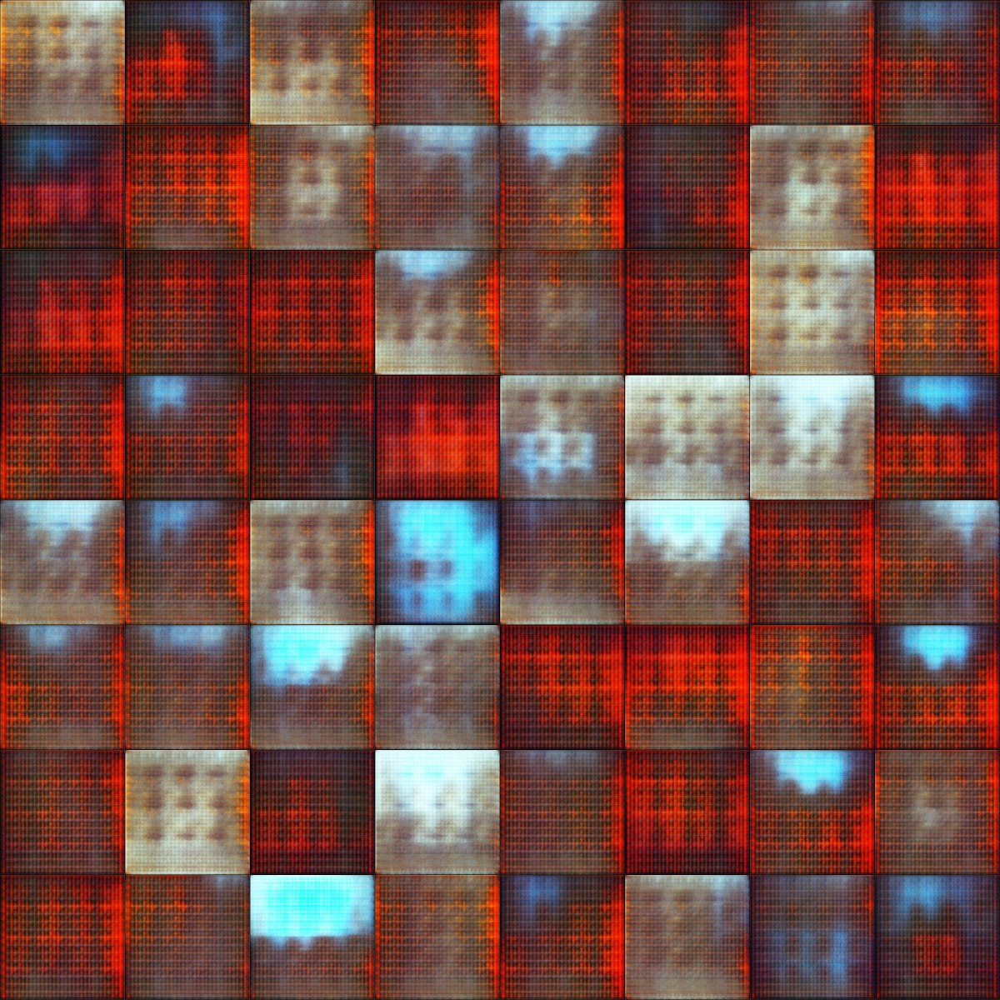

sovrn.art · Curated collection
by Bård Ionson

Painting with Fire presents a vignette of transformation: the evolution of GANs from 2014 to 2023 seen through the eyes of fire. Using 14 vintage GAN models, Ionson articulates the emergence of synthetic image generation and the strange turns that it took through time. Each of the 200 artworks invokes the image of fire, showing the wild variety of ways that early generative visual algorithms imagine this elemental force. Ionson explores fire as the quintessence of humanity's relationship to both innovation and destruction, embracing the unexpected abstractions of classic AI as a distinctive aesthetic statement. In the artist's words, "There is a beauty in the noise, the randomness before the resolution into fire."
GAN (generative adversarial network) technologies were developed by researchers and programmers but then utilized by artists in many different forms. Though the technology was invented to make the images as realistic as possible, Bård subverts this to use it chaotically and abstractly; the opposite of what the Ai researchers had in mind. This project celebrates the researchers, innovators and artists who have brought synthetic image generation to life with models such as the aiCAN (Playform), DCGAN, Stylegan 1, 2 and 3, bigGan, biGAN, pix2pix, AttnGan, and more.
From the biblical burning bush to the the intimacy of a candle flame, Ionson makes fire speak as a paragon of humanity's potentials and pitfalls.
“Channeling the fire myths of the world, Prometheus, the Phoenix, the gods of the sun and flame. A story of technology brought to humans; to myths of destruction and rebirth. To be immortal; to be a god; it is always a paradox of fire and technology. The morality of the fire is always in question but we desire it and fear it. And yet it has changed us, we have learned so much since we first touched fire. We used it to destroy the wood, smelt the metal and build the chip. And now we teach and show the fire what we know; what we create and our reflection is there telling us our faults. The GAN is but a single neuron in a blazing star; a greater fire is coming."
Bård Ionson







There is a beauty in the noise, the randomness before the resolution into fire.
Bård Ionson
In the course of researching Painting with Fire, Bård has created a timeline of milestones in the history of GANs. This GAN timeline has 200 entries. Each of the 200 artworks includes a "Historic Event" trait that connects to one of these points on the timeline.
As part of this project, Ionson has constructed a timeline of GAN milestones. The 'historic event' traits of each token are compiled into what aims to be a definitive chronology of GANs, published on our site here and at bardionson.com/painting-with-fire. Ionson himself is part of this timeline as a foundational figure at the meeting point of AI and cryptoart, and his art is part of the Oxford Bodleian Weston Library and the Centre Pompidou collections, among others.


Bård Ionson is a pioneer of both crypto and generative art who uses his GAN-algorithms to help flesh out small universes across multiple mediums. The resulting multimedia experiments, spanning image and written word, are but a strange, ultra-expressive tango capitalizing on what AIs do best —generate— and what humans do: imagine.
View on Raster ↗bardionson.com ↗Bård Ionson on X ↗
Painting with Fire: a History in GANs, Bård Ionson, 2023. Two hundred works made with fourteen vintage GAN models. A curated collection on sovrn.art.